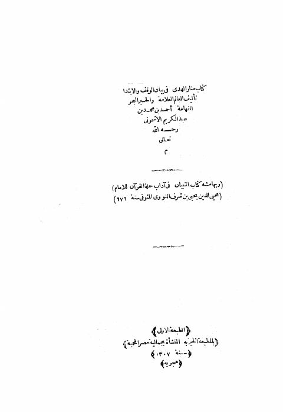

Downloads need an internet connection.
منار الهدى في بيان الوقف والابتداء ومعه التبيان في آداب حملة القرآن للنووي
Authors: يحيى بن شرف النووي أحمد بن محمد بن عبد الكريم الأشموني
Publishers: المطبعة الخيرية
**▫️ العنوان: منار الهدى في بيان الوقف والابتداء ومعه التبيان في آداب حملة القرآن للنووي** ▪️ المؤلف: #أحمد_بن_محمد_عبد_الكريم_الأشموني • #يحيى_بن_شرف_النووي ▫️ الناشر: #المطبعة_الخيرية ▪️ تاريخ النشر: 1307هـ ▫️ بلد النشر: القاهرة، #مصر ▪️ الطبعة: 1 ▫️ عدد الأجزاء: 1 ▪️ الصفحات: 304 ▫️ نوع الوعاء: #كتاب ▪️ التصنيف الرئيسي: #التفسير_وعلوم_القرآن ▫️ التصنيف الفرعي: #التجويد_والقراءات ۪